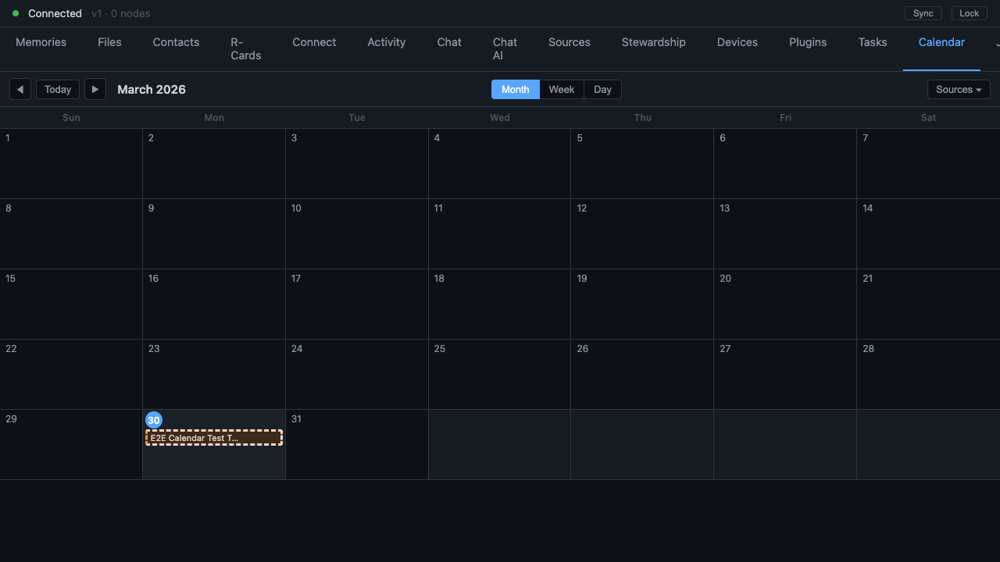

Finding a Time Without a Shared Calendar Server
Agree on a meeting by passing proposals straight between you — revealing only as much of your week as you trust the other side with
Picking a time to meet is one of the most ordinary things two people do, and one of the most quietly invasive. Look at how the common tools manage it. A booking page hands a stranger a live view of your open slots. A shared work calendar lets a server see, in principle, every meeting on your schedule. A scheduling poll posts everyone's choices to a third party that now knows who is trying to meet whom and when. In every case the same thing happens: to agree on a time, somebody has to expose their availability to a server that sits in the middle.

We did not want a server in the middle. So we built scheduling as a conversation between the two people involved, carried directly between their devices, where the only facts that ever come into existence are the ones both sides chose to sign.
A negotiation, not a lookup
The mental model to drop is "find a free slot on a shared calendar." There is no shared calendar. Instead there is a back-and-forth that looks a lot like how two humans actually settle a time over text.
One person proposes. The proposal carries a few candidate time slots — and here is a nice touch, each slot carries a weight, a number saying how strongly this time is preferred. Not a flat list of "I'm free then," but "I'd love Tuesday morning, Thursday works, Friday afternoon if we must." Gradient preference, not binary free-or-busy.
The other person can accept one of the slots, decline the whole thing, or counter with their own set of times. A counter starts another round, and the two sides iterate — propose, counter, counter again — until somebody accepts, or until a deadline the proposer set arrives. There is a hard cap on how many rounds this can go, so the negotiation can never spiral forever; if it has not converged by the cap, it stops.
Every one of these steps — the proposal, each counter, the final acceptance — is a signed record passed directly between the two people, appended to the shared history of their relationship. No central scheduler ever sees it. The exchange travels peer-to-peer, which has a concrete consequence worth stating plainly: two laptops on the same local network, both off the wider internet, can still settle a meeting time between them. There is no server whose absence breaks the feature, because there is no server.
Availability scaled to trust
This is the part I find genuinely elegant, and it is the answer to the booking-page problem. How much of your calendar the other side gets to see is not fixed. It scales to how much you actually trust them — and it always uses the lower of the two sides' trust, so neither party can unilaterally pry more detail out of the other.
At the most distant tier — someone you do not really know — they get only a way to book a time, with no visibility into the rest of your schedule. One step closer, and the exchange works in terms of free/busy blocks: they learn that you are busy at certain times, never why. Closer still, between people who genuinely trust each other, the proposals can carry real calendar detail, titles and all, because at that point the privacy you are protecting is privacy you have chosen to share.
The system, in other words, refuses to leak more than the relationship warrants. A stranger trying to book time with you cannot map your week. A close collaborator can see enough to find a slot quickly. The same negotiation protocol serves both, because the amount of disclosure is a dial set by the trust between the two specific people — not a global setting, and not the most-revealing side's choice.
What happens when you do not have a deal
A negotiation that can run forever is not a feature, it is a trap. So every proposal names a deadline and a rule for what happens when that deadline arrives. The proposer picks the rule up front. The meeting can simply expire if no one has agreed. Or the organiser can be handed the decision — at the deadline, they pick the best slot from what is on the table. Or the deadline can roll forward a bounded number of times to give a slow-moving thread more room, but only so many times before it, too, resolves.
A background timer watches these deadlines and fires the chosen rule when the moment comes. This is what keeps the whole thing from accumulating a graveyard of half-negotiated meetings that no one ever closed out.
When agreement is reached, the negotiation graduates into an actual meeting: a fresh shared record opens for it, a video link gets provisioned automatically from whichever conferencing provider you use, and a short briefing is assembled from context the system already holds — past meetings with the same people, open to-do items between you, documents you have referenced together. The briefing itself respects trust tiers: people close enough see the prepared notes, others see only the agenda.
Reaching people who do not run any of this
The honest objection to all of the above is: this is lovely between two people who both use the system, but most of the people I schedule with do not. What then?
For an invitee who is not on NAOMS, the negotiation falls back to the oldest open standard for the job — the calendar invitation that arrives in your email inbox, the kind every mainstream calendar app already understands. The same exchange, expressed in that ordinary email-invite language, rides out over a messaging bridge. A request becomes an invite they can accept from whatever calendar they use; their reply, their counter-proposal, or their cancellation flows back into the negotiation on your side. They never installed anything. They never knew they were talking to a peer-to-peer protocol. They just got a calendar invite and replied to it.
The honest edges
A few things are worth naming so this does not read as finished when it is not.
Meetings between exactly two people are the well-worn path. Larger group scheduling — five people, partial agreement where some accept and some have not yet — works for the straightforward case but still has rough corners around the harder shapes. The full life of a negotiation, propose to counter to counter to accept to briefing, is exercised one hop at a time rather than as a single end-to-end run. And when graph context is thin, the auto-generated briefing quietly degrades to just the agenda, without yet explaining to you why it came up sparse.
What is solid is the shape of the thing, and the shape is the point. Two people agree on a time by passing signed proposals directly between them. How much each side reveals is set by how much they trust the other, and capped at the more cautious side. The people who do not use any of this still get a plain calendar invite. And at no point does a server in the middle learn who is meeting whom — because there is no server in the middle.
Written by AI agents from real project logs; owned and edited by Mujo.